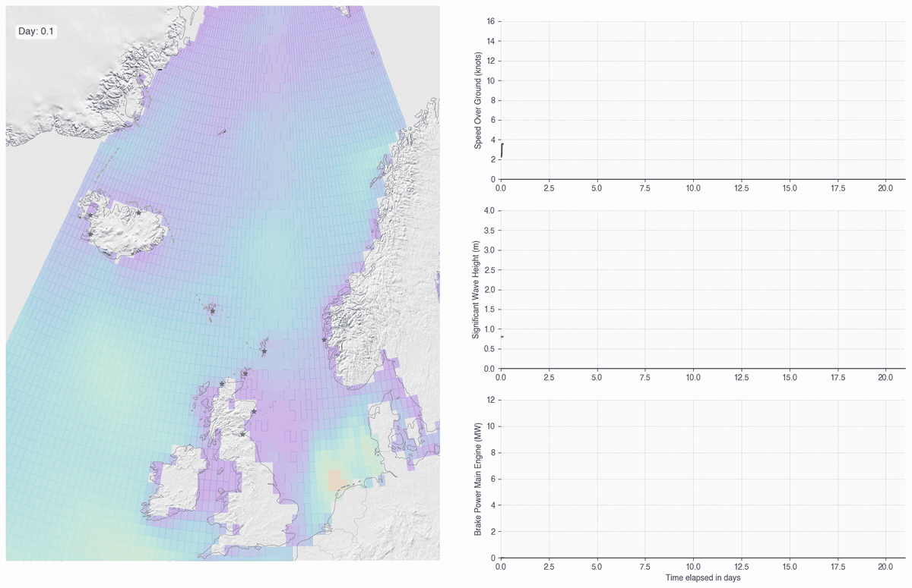
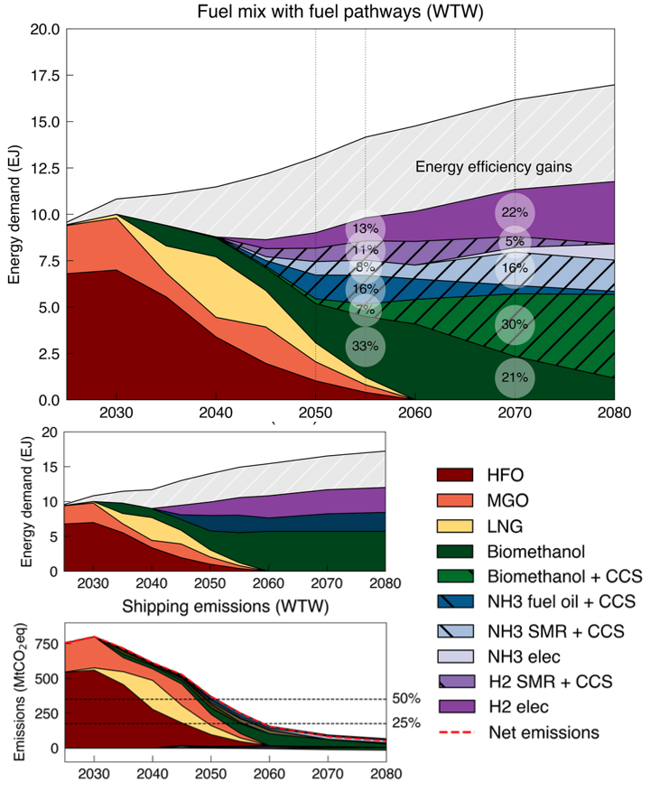
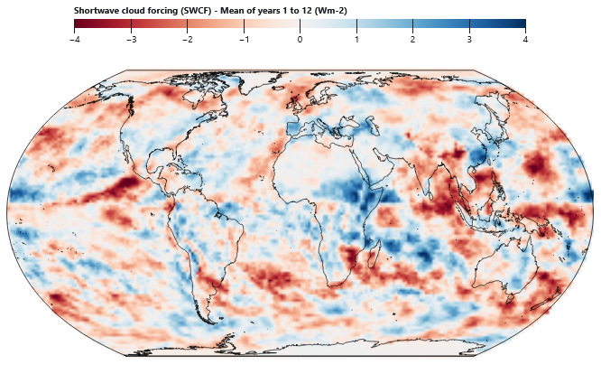

Research Projects
-
The MariTEAM Model: Global Shipping Emissions
A bottom-up model that follows every ship in the global fleet using AIS data, estimates resistance and power demand voyage by voyage, and computes air pollutant and greenhouse gas emissions from a well-to-wake perspective, for conventional and alternative fuels. Watch the video.
- D. Kramel, H. Muri, Y. Kim, R. Lonka, J. B. Nielsen, A. L. Ringvold, E. A. Bouman, S. Steen, and A. H. Strømman. Global Shipping Emissions from a Well-to-Wake Perspective: The MariTEAM Model. Environmental Science & Technology, 2021.
- Y. Kim, S. Steen, D. Kramel, H. Muri, and A. H. Strømman. Modelling of ship resistance and power consumption for the global fleet: The MariTEAM model. Ocean Engineering, 2023.

-
Shipping in Integrated Assessment Models
Long-term scenarios for maritime trade and energy demand aligned with the Shared Socioeconomic Pathways, and the MariTeam-MESSAGEix linkage that places shipping inside global energy-system transitions.
- D. Kramel, V. Krey, O. Fricko, F. Maczek, H. Muri, and A. H. Strømman. Maritime sector pathways toward net-zero emissions within global energy scenarios. Scientific Reports, 2026.
- D. Kramel, S. M. Franz, J. Klenner, H. Muri, M. Münster, and A. H. Strømman. Advancing SSP-aligned scenarios of shipping toward 2050. Scientific Reports, 2024.
- S. M. Franz, D. Kramel, A. H. Strømman, R. Bramstoft, H. Muri, and M. Münster. Implications of an antagonist age for maritime trade and its impacts on energy demand. One Earth, 2024.

-
Alternative Fuels and Life-Cycle Impacts
Life-cycle perspectives on how ships can change fuels and what that means for land, ecosystems and the climate, from biomethanol supply limits to the biodiversity impacts of ballast water.
- H. Esfandiari, H. Muri, and D. Kramel. Biomethanol as a Marine Fuel Within Land Use Sustainability Boundaries. Clean Technologies, 2025.
- P. Gjedde, D. Kramel, J. B. Pettersen, A. H. Strømman, and F. Verones. The impact of invasions from ballast water: A life cycle impact assessment method. Journal of Environmental Management, 2026.

-
Oceans, Cities and Maritime Space
Collaborations beyond shipping: climate impacts on ocean-derived wellbeing, city-level CO2 inventories, and maritime spatial planning in the Macaronesian islands.
- Y. Zhang, Q. Jiang, X. Lin, Q. Dai, C. A. Pilditch, C. Feng, J. Zhang, M. Hu, D. Kramel, and Y. Chen. Climate change is projected to widen global inequalities in ocean-derived wellbeing. Communications Earth & Environment, 2026.
- D. Moran, P.-P. Pichler, H. Zheng, H. Muri, J. Klenner, D. Kramel, J. R. Többen, H. Weisz, T. Wiedmann, and A. Wyckmans. Estimating CO2 Emissions for 108,000 European Cities. Earth System Science Data, 2022.
- H. Calado, M. C. Varona, J. L. S. Vivero, F. Moniz, F. Halim, C. Hipólito, E. Menini, D. Kramel, M. Vergílio, and M. A. Ferreira. Island geography shaping maritime space in Macaronesia. Europa XXI, 2019.
Tools from my Master's Theses
During my master's studies I was keen on turning thesis research into tools that anyone can use. Both of these run directly in the browser and are open source.
- SailPy: preliminary design of sailing yachts. It optimizes the hull dimensions with genetic algorithms using the Delft Systematic Yacht Hull Series, sizes the keel, rudder and sails, and predicts boat speed with a velocity prediction program. Master's thesis, University of São Paulo, 2021.
- SMMR (Simulation of Marine Mammals Resilience): simulates how whale populations respond to ship strikes and other human pressures over time. Master's thesis in Maritime Spatial Planning, University of the Azores, University of Seville and Iuav University of Venice.